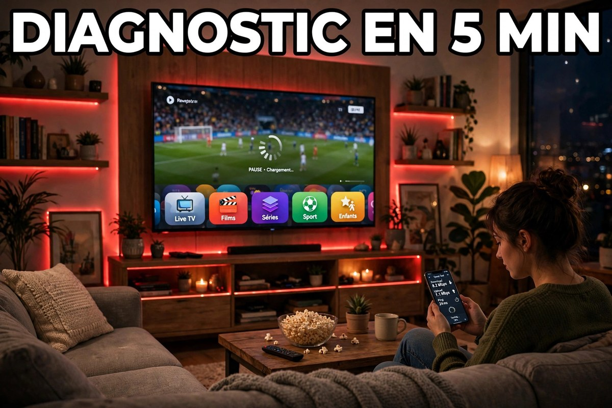
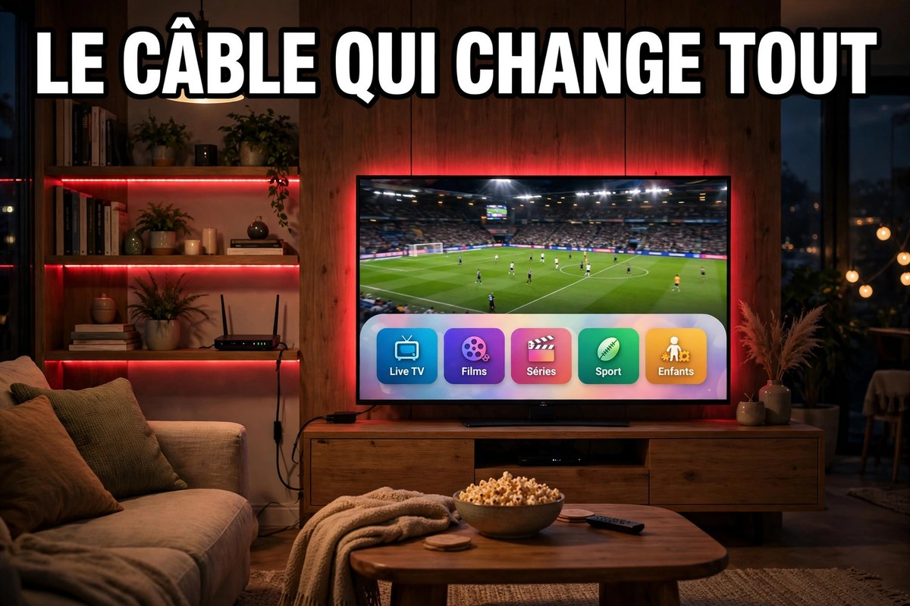

Dépannage
Panne IPTV : résoudre les coupures et le buffering
Panne IPTV, buffering ou chaîne qui coupe ? Diagnostic en 5 minutes, causes fréquentes, réglages réseau et appareil pour retrouver une lecture fluide.

Comprendre d’où viennent les coupures
Dernière vérification : 20 novembre 2026.
Une image qui se fige, un rond de chargement qui tourne en plein match, une chaîne qui refuse de démarrer : les coupures IPTV sont frustrantes, mais elles ont presque toujours une cause identifiable. Pour la trouver, il faut se souvenir du trajet de l’image : elle part des serveurs du fournisseur, traverse internet et votre fournisseur d’accès, arrive à votre box, passe par votre réseau local (Wi-Fi ou câble) et termine dans votre appareil et son application. Un maillon faible suffit à provoquer des coupures.
Dans la grande majorité des cas, le problème se situe chez vous, dans le réseau local ou l’appareil, et se corrige en quelques minutes. Si vous découvrez l’IPTV, notre article qu’est-ce que l’IPTV explique ce fonctionnement plus en détail.
Envie de tester ? Essai gratuit de 24 h, activation rapide et aide à l’installation sur WhatsApp.
Demander mon essai gratuitLe diagnostic en 5 minutes

Procédez dans l’ordre, en testant une chaîne après chaque étape :
- Testez une autre chaîne. Si une seule chaîne coupe, le problème vient probablement de cette chaîne : signalez-la au support.
- Testez un autre appareil. Si tout fonctionne sur votre téléphone mais pas sur la télé, le problème vient de la télé ou de l’application.
- Testez votre débit sur l’appareil concerné, avec un site ou une application de test de vitesse.
- Redémarrez tout : débranchez la box internet et l’appareil pendant une minute.
- Passez en câble Ethernet si possible, même temporairement, pour voir si le Wi-Fi est en cause.
À l’issue de ces tests, vous saurez généralement si la cause est la chaîne, l’appareil ou le réseau.
Les causes les plus fréquentes
- Un Wi-Fi faible ou saturé : box éloignée, murs épais, appareils nombreux, voisins sur le même canal.
- Un débit insuffisant : 10 Mb/s sont nécessaires pour la HD, 25 Mb/s pour la 4K, et davantage si d’autres personnes utilisent internet en même temps.
- Un appareil saturé : mémoire pleine, cache volumineux, trop d’applications ouvertes.
- Un mauvais réglage du lecteur : décodeur inadapté, mémoire tampon trop faible.
- Un ralentissement du fournisseur d’accès aux heures de pointe, sur certains réseaux.
- Une maintenance ponctuelle du serveur, rare et généralement annoncée.
Améliorer votre réseau

Passer en Ethernet
C’est la solution la plus efficace. Un câble entre la box et le téléviseur ou le boîtier élimine la plupart des coupures. Si la distance est grande, un kit CPL (courant porteur) fait passer le réseau par les prises électriques.
Optimiser le Wi-Fi
- Rapprochez la box ou l’appareil, ou ajoutez un répéteur ou un système Wi-Fi maillé.
- Utilisez la bande 5 GHz, plus rapide, quand l’appareil est proche de la box.
- Éloignez la box des micro-ondes, des téléphones sans fil et des gros objets métalliques.
- Limitez les téléchargements lourds sur les autres appareils pendant les matchs.
Vérifier la box internet
Redémarrez-la de temps en temps, installez ses mises à jour et vérifiez qu’aucun appareil ne sature la connexion (sauvegarde en ligne, téléchargement, mises à jour de console).
Envie de tester ? Essai gratuit de 24 h, activation rapide et aide à l’installation sur WhatsApp.
Demander mon essai gratuitOptimiser l’appareil et l’application
- Videz le cache de l’application IPTV et redémarrez l’appareil.
- Changez de décodeur dans les réglages du lecteur : décodage matériel, logiciel, ou autre lecteur intégré.
- Augmentez la mémoire tampon si votre connexion est irrégulière.
- Mettez à jour l’application et le système.
- Désinstallez les applications inutiles pour libérer de la mémoire.
Sur Fire TV Stick, appliquez nos astuces pour un Fire TV Stick fluide. Sur TiviMate et Smarters, les réglages du lecteur sont détaillés dans nos guides TiviMate et IPTV Smarters Pro.
Les coupures pendant les matchs
Les grands événements sportifs mettent les réseaux à rude épreuve : beaucoup de monde regarde en même temps, chez vous comme chez votre fournisseur d’accès. Pour les soirées importantes :
- lancez la chaîne quelques minutes avant le coup d’envoi ;
- choisissez la version HD plutôt que la 4K si votre débit est juste ;
- coupez les autres usages d’internet dans le foyer ;
- si votre fournisseur d’accès ralentit le streaming, un VPN peut aider : il est inclus avec votre abonnement Sunday IPTV.
Les messages d’erreur courants
Écran noir avec le son
Le décodeur vidéo de l’application ne gère pas bien le flux : changez de lecteur dans les réglages, ou testez la même chaîne dans une autre application.
« Erreur d’authentification » ou « identifiants invalides »
Vérifiez vos identifiants caractère par caractère, ainsi que l’adresse du serveur. Si l’abonnement vient d’être renouvelé, redémarrez l’application.
Le guide des programmes est vide
Lancez une mise à jour de l’EPG dans l’application et vérifiez le fuseau horaire de l’appareil.
« STB is blocked » sur un boîtier MAG
L’adresse MAC n’est pas activée ou l’abonnement a expiré. Voir notre guide boîtier MAG.
Quand changer d’appareil ?
Si votre réseau est bon et que les coupures persistent sur un seul appareil, celui-ci est peut-être trop ancien ou trop peu puissant. Un Fire TV Stick 4K Max, une box Android TV récente ou une Apple TV apportent souvent une nette amélioration. Comparez-les dans quel boîtier IPTV choisir.
Contacter le support
Si rien ne fonctionne, écrivez au support Sunday IPTV sur WhatsApp, 24 heures sur 24, en précisant : l’appareil et l’application utilisés, la ou les chaînes concernées, l’heure du problème et le résultat de votre test de débit. Ces informations nous permettent de trouver la solution beaucoup plus vite.
Envie de tester ? Essai gratuit de 24 h, activation rapide et aide à l’installation sur WhatsApp.
Demander mon essai gratuitQuestions fréquentes
Pourquoi ça coupe seulement le soir ?
Le soir, les réseaux sont les plus chargés, chez vous comme chez votre fournisseur d’accès. Passez en Ethernet, choisissez la HD plutôt que la 4K et essayez le VPN si votre fournisseur ralentit le streaming.
Une meilleure box internet règle-t-elle le problème ?
Parfois, mais le plus souvent c’est le Wi-Fi entre la box et la télé qui pose problème. Un câble Ethernet ou un kit CPL est généralement plus efficace qu’un changement de box.
Le problème peut-il venir du service IPTV ?
C’est possible lors d’une maintenance ou sur une chaîne précise. Si toutes les chaînes coupent sur tous vos appareils malgré un bon débit, contactez-nous : nous vérifions immédiatement.
Le Wi-Fi peut-il provoquer une panne IPTV ?
Oui, c’est la cause la plus fréquente. Rapprochez l’appareil de la box internet ou, mieux, branchez-le avec un câble Ethernet.
Quel débit faut-il pour éviter les coupures ?
Environ 10 Mb/s pour la HD et 25 Mb/s pour la 4K, et davantage si d’autres personnes utilisent internet en même temps.
Testez Sunday IPTV gratuitement
Essai gratuit de 24 heures, activation rapide et support 24/7 sur WhatsApp.
Demander mon essaiÀ lire aussi

Fire TV Stick et IPTV : astuces pour une lecture fluide
Fire TV Stick lent ou qui coupe ? Réseau, mémoire, réglages cachés et bonnes habitudes pour rendre votre Fire TV Stick rapide et stable pour l’IPTV.

Quel boîtier IPTV choisir en 2026 ?
Quel boîtier IPTV choisir en 2026 ? Fire TV Stick, box Android TV, Apple TV 4K ou boîtier MAG : comparatif, critères qui comptent et erreurs à éviter.

Qu’est-ce que l’IPTV ? Explication complète (2026)
Qu’est-ce que l’IPTV ? Fonctionnement de la télé par internet, matériel nécessaire, Xtream Codes et M3U, appareils compatibles et différences avec le satellite.